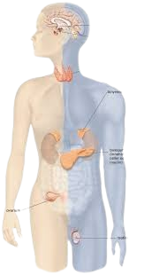

Podcast
Nervesystemet
Hormonsystemet, består av kjertlar som stiller ut hormoner i blodet. Hormoner er kjemiske budbringere som produseres i endokrine kjertlar og skilles direkte ut i blodbanen for å virke på andre organer og den innbyrdes reguleringen som finnes mellom hormonene.

Bildekjelde